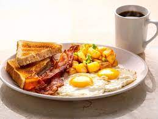

Odin Recipes
Big Breakfast Recipe
The final product should look similar to this:

This recipe consists of buttered white bread, bacon, eggs, potatoes and onions.
Ingredients
You will need the following ingredients to make this dish:
- A loaf of white bread
- Bacon, regular or turkey
- Potatoes (russet potatoes usually work best)
- eggs (white or brown)
- 1 white onion
Steps
Below is a step by step process to make this dish
Prep
- Finely dice onions. Place into small/medium sized bowl
- Cube potatoes to a small proportion. Place in large, microwave safe bowl
- Place white bread in toaster, do not toast yet
Cook
- Dampen a wet paper towel and place over the cubed potatoes in large, microwave safe bowl. Place bowl in microwave for 8 minutes on high power
- While potatoes microwave, open the pack of bacon, place strips in medium/large pan. Set the heat to medium/high and flip every 3 minutes.*Important* If the bacon starts to spatter in the pan, reduce the heat slightly
- As the bacon strips are done cooking, place the strips onto a plate with a dry paper towel on top so that the grease gets soaked up by the towel.
- As potatoes are about to be done in the microwave, heat a large skillet on medium/high heat and add olive oil. Dump potatoes into skillet. Stir potatoes frequently and cok until golden brown.
- As potatoes are browning, mix in the diced onions and continue to stir frequently. Cook for another 5-10 minutes
- With less than 5 minutes left to cook the potatoes, start the toaster for the bread. If you have a toaster oven, start to toast the bread sooner. After the potatoes are done cooking, turn heat down to low and keep covered by a lid
- At the same time, heat a small pan with olive oil (if non-stick pan, do not use any spray) at medium heat, and crack an egg into the pan. The way the egg is cooked is left up to you.
- Take toast out of toaster, spread butter on toast.
- Place egg(s), bacon, potatoes, and toast and place on empty plate. Let food sit for 1 minute
- Serve with ketchup if desired